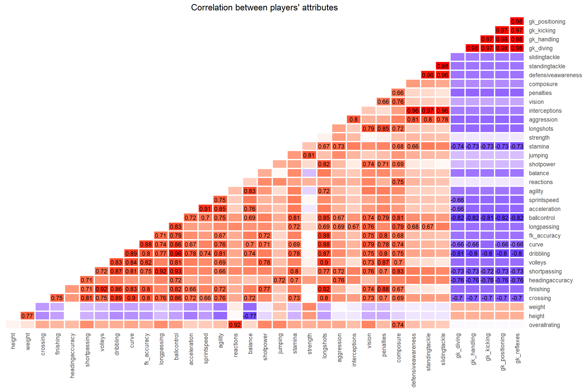
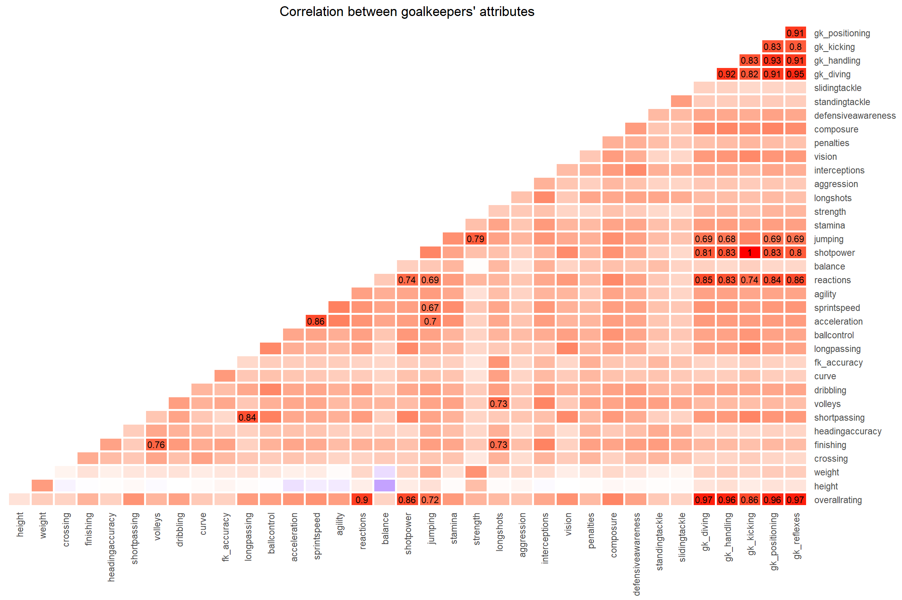
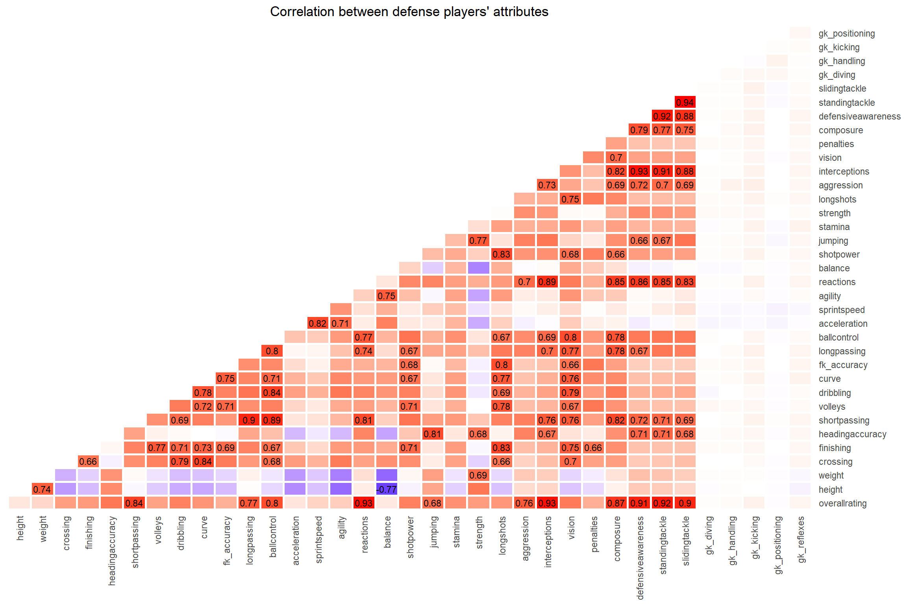
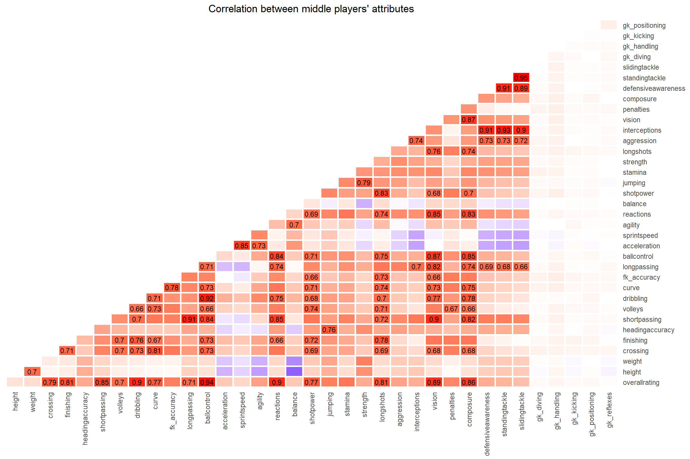
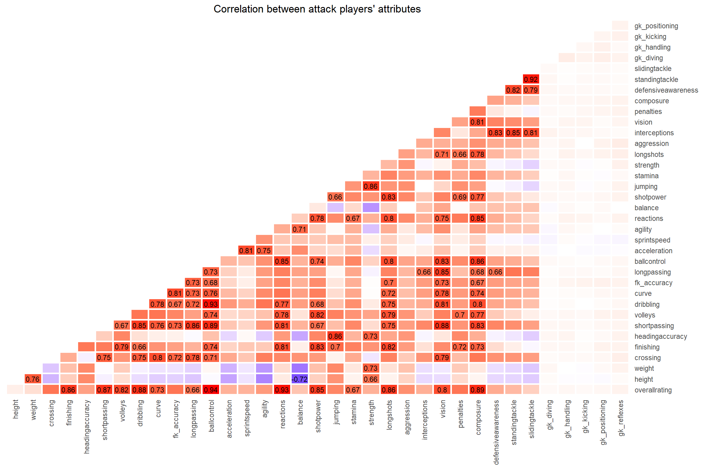
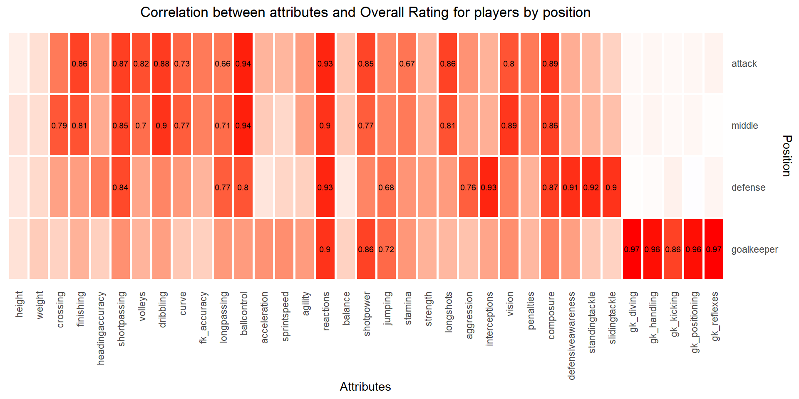

This section will analyze the correlations between the attributes measured for each player. The attribute values are defined by the EAFC game developers and, with the exception of “height” and “width”, vary between 0 and 100.
The correlation is a value ranging from -1 to 1.

When analyzing the correlation between the players’ attributes in
general, the goalkeepers’ attributes stand out, as they present a
negative correlation with most of the other attributes.
A high positive correlation is also noted between the attributes
“sliding tackle”, “standing tackle”, “defensive awareness” and
“interceptions”. All of these attributes are characteristic of defensive
players.
On the other hand, attributes such as “dribbling”, “shortpassing”,
“longpassing” and “ball control” also present a strong positive
correlation.
Analyzing all players, regardless of position, the attribute that
appears to be most correlated with “overall rating” is “reactions”,
although the impact of attributes on “overall rating” will be analyzed
in more depth in future sections.
 As shown in the overview, goalkeeper attributes demonstrate a strong positive correlation with each other, and when analyzing only the players in this position, a strong positive correlation can also be noted between these attributes and others such as “jumping”, “shotpower” and “reactions”. In relation to “overallrating”, the variables “shotpower”, “reactions” and “jumping” stand out in addition to the attributes specific to the position.

For defensive players, the attributes related to tackling and interception show a higher correlation, probably indicating that they are characteristic attributes of players in these positions. Furthermore, these same attributes positively affect the “overall rating”, along with short and long passes and “reactions”.

The behavior of midfielders is similar to that of defenders, with a positive correlation between defensive attributes, but also highlights the influence of ball control on bribbling. The attributes of tackling and interception have a smaller impact on the overall rating when compared to defensive players, while the impact of ball control, dribbling, vision, finishing and crossing is greater.

Finally, for attacking players there is a greater concentration of positive correlations between passing, finishing and ball control attributes. There is also a stronger positive correlation between jumping and strength than in the other positions, indicating that for attackers, the stronger they are, the better they are in aerial plays. In relation to the overall rating, the passing and finishing attributes have a greater impact than when related to midfielders, and shotpower also appears as a relevant factor.
This section compiles the “overall” correlation with the other attributes for each position to clarify the positive impact of the attributes on the players’ “score”. 